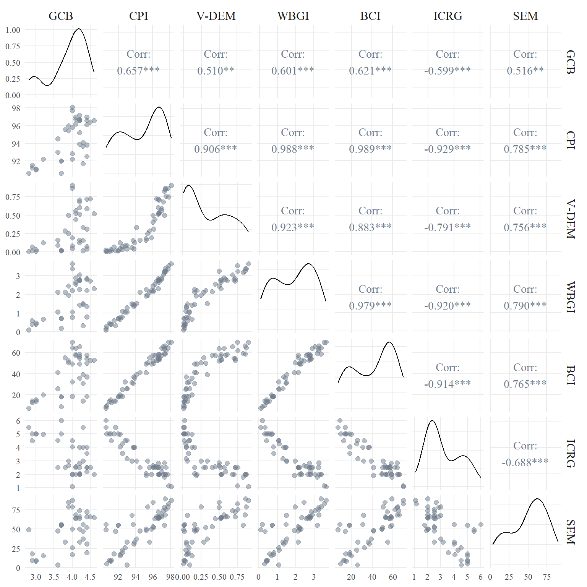
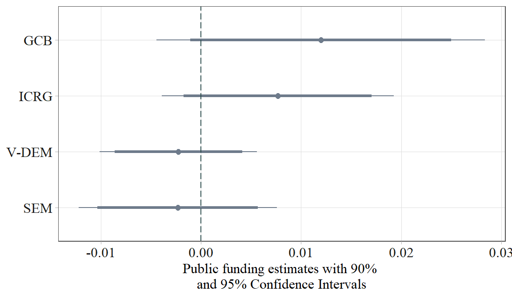
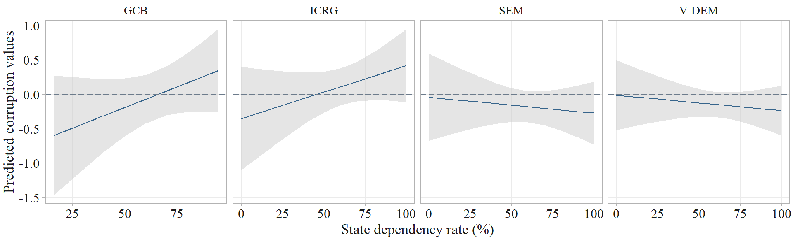

![]()

The world upside down: delegitimising political finance regulation employing alternative corruption indexes
party financing
public funding of parties
corruption indices
replication
In this blogpost I replicate the study of Casal Bértoa et al. (2014) ‘The world upside down: delegitimising political finance regulation’ by using alternative corruption indices to check whether their results change conditional on the specific corruption index used
In this blog post, I replicate one of a few comparative cross-national studies on the effect of political financing regulations on political corruption (Casal Bértoa et al., 2014). In a nutshell, the title of the paper suggests that political financing regulations (PFR) do not live up to our expectations in reducing political corruption. Despite the normative belief that more party and campaign financing regulations should diminish political corruption, the authors come to a rather pessimistic conclusion. They do not find evidence that donation caps, public funding of political parties or punishments for financing-related breaches diminish corruption.
Of course, their findings represent a heavy blow to policymakers’ efforts to curb political corruption by restricting the inflows and outflows of political money. The most disappointing result in their study relates to the lack of any curbing effect of state funding. This result is even more disappointing considering the fact that authors use a rather good instrument for measuring public funding of parties - state dependency rate. Here, state dependency represents the proportion of state subsidies in the structure of party income, which means the amount of money political parties receive directly from the state budget for running their regular and electoral activities. One would expect that the more funding parties get from the public purse, the less they will be tempted to ask for illegal funding, thus the lower the probability of getting entangled in corrupt transactions. Hence, Casal Bértoa et al. (2014) test this argument using information on state dependency rate, but fail to confirm this expectation.
Yet, while they have a pretty good indicator of public funding, the corruption measure they selected is a more specific one - citizens perception of how corrupt political parties are from the Global Corruption Barometer (GCB) conducted by Transparency International. While nothing is wrong with choosing this indicator, one issue in many corruption studies is that the results might be considerably affected by the choice of corruption index. Although many corruption indexes are highly correlated, this is not always the case when the index reflects citizens’ not experts’ perceptions about political corruption. This is why I replicate this study but also use alternative corruption measures. Among these alternatives, I look at some older indexes widely used in cross-national research on corruption, such as the Corruption Perception Index (Transparency International) (CPI), Control of Corruption index (World Bank Governance Indicators) (WBGI) or International Country Risk Guide, and newer ones including political corruption index (V-DEM) from the Varieties of Democracies dataset (Coppedge et al., 2021; Maerz et al., 2021), the Bayesian Corruption index (BCI) (Standaert, 2015) or the corruption index constructed using partial least squares-structural equation modelling (Dell’Anno, 2020). As figure Figure 1 shows, the correlation between almost all expert-based perception indexes for countries used in Casal Bértoa et al. (2014) analysis is astonishingly high. But all of them display a visibly lower correlation with the GCB index.
Since several corruption indexes display a very high correlation, I drop them and use for replication only those that display a lower correlation with GCB and between themselves: GCB, V-DEM, ICRG and SEM. Additionally, I normalise and standardise corruption indexes to make their interpretation easier because they are on different scales. The replication’s results regarding the effect of public funding (state dependency) on political corruption are presented in figure Figure 2.

As one may notice, for the GCB and ICRG corruption indexes, the effect is positive (more public funding is associated with a higher corruption perception). In contrast, while for V-DEM and SEM indexes, the effect is negative (more public funding is associated with a lower corruption perception). However, these results are not statistically significant, which implies that state dependency (public funding of parties) does not affect the level of political corruption. The null effect can also beseen in figure Figure 3.

To conclude, I replicate the study of Casal Bértoa et al. (2014) by employing alternative corruption indices. My findings confirm their main result - state dependency rate has no effect on political corruption perception, which casts doubts on the effectiveness of state subsidies as an anti-corruption tool. Nevertheless, one should not forget that corruption perception does not equate with corruption experience, that is, actual incidence of corruption related to party and campaign funding. Therefore, one needs better corruption indicators to assess the impact of state assistance to political parties on their corrupt behaviour.
References
References
Casal Bértoa, F., Molenaar, F., Piccio, D. R., & Rashkova, E. R. (2014). The world upside down: Delegitimising political finance regulation. International Political Science Review, 35(3), 355–375.
Coppedge, M., Gerring, J., Knutsen, C. H., Lindberg, S. I., & Teorell, J. (2021). V-dem dataset. https://doi.org/10.23696/VDEMDS21
Dell’Anno, R. (2020). Corruption around the world: an analysis by partial least squares-structural equation modeling. Public Choice, 184(3), 327–350. https://doi.org/10.1007/s11127-019-00758-5
Maerz, S., Edgell, A., Hellmeier, S., & Ilchenko, N. (2021). Vdemdata - an r package to load, explore and work with the most recent v-dem (varieties of democracy) and v-party datasets. https://www.v-dem.net/en/
Standaert, S. (2015). Divining the level of corruption: A bayesian state-space approach. Journal of Comparative Economics, 43(3), 782803. https://doi.org/10.1016/j.jce.2014.05.007